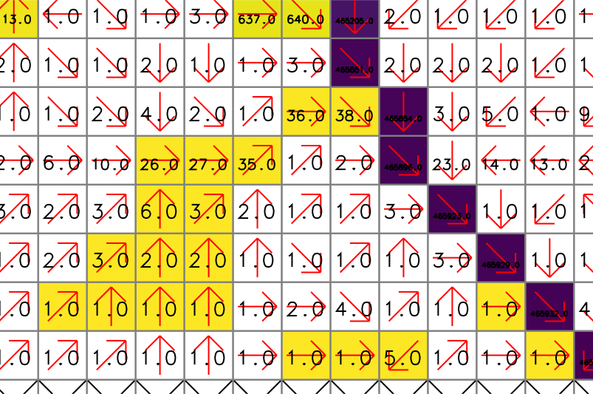

The module recognizes three different formats of flow directions:
Because it does not use elevation data (e.g., slope), flow accumulation is calculated by single flow direction (SFD) routing and may not be comparable to the result from multiple flow direction (MFD) routing.
By default, the module allows cell values to overflow the maximum value of the specified output type to avoid excessive checks. With the -o flag, it prints a fatal error and exits if an overflow occurs.
The module uses extra memory to store an intermediate output matrix and it is generally faster than with the -m flag because intermediate results need not be calculated repeatedly. On heavy swapping, however, computation can be faster with the -m flag because of reduced memory allocation. With this flag, intermediate results are calculated as needed and never stored in memory.
Cells in the output matrix are initialized to null and need not be nullified after computation. With the -z flag, they are initialized to zero and those outside flow accumulation are nullified later. With this flag, it can be faster on heavy swapping because of less write operations for nullifying remaining zero cells outside flow accumulation, compared to null-initialization of the entire region without this flag. However, when there is not much swapping (e.g., data fit in the physical memory), the -z flag can be slower with additional zero-comparison operations. The -Z flag is similar to the -z flag, but zero cells are not nullified and are saved in the output map.
Weighted flow accumulation can be computed using a weight raster map. When this option is given, its raster type is used for flow accumulation, and the type option, -o, -z, and -Z flags cannot be specified.
Calculate flow accumulation using r.watershed and r.flowaccumulation:
# set computational region g.region -p raster=elevation # calculate positive flow accumulation and drainage directions using r.watershed # for comparison, use -s (SFD) r.watershed -sa elevation=elevation accumulation=flow_accum drainage=drain_directions # calculate flow accumulation using r.flowaccumulation r.flowaccumulation input=drain_directions output=flow_accum_new # copy color table r.colors map=flow_accum_new raster=flow_accum # check difference between flow_accum and flow_accum_new r.mapcalc expression="flow_accum_diff=if(flow_accum-flow_accum_new, flow_accum-flow_accum_new, null())"
There are slight differences between the two output maps. The yellow and purple cells show the difference raster map (flow_accum_diff). The red arrows and numbers represent drainage directions (drain_directions) and flow accumulation by r.watershed (flow_accum), respectively. Note that some cells close to headwater cells are assigned 1 even though they are located downstream of other cells.

For comparison, these numbers show the new flow accumulation by r.flowaccumulation (flow_accum_new). The same cells are properly accumulated from the headwater cells.